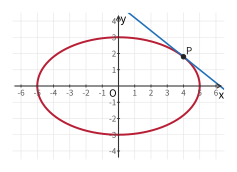
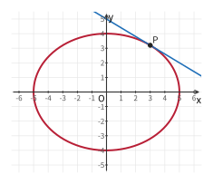
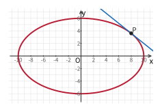

別冊練習問題 5 の解答 楕円上の点での接線
(1) 楕円 \(\dfrac{x^2}{25}+\dfrac{y^2}{9}=1\) 上の点 \(P(4,\ \dfrac{9}{5})\) における接線の方程式を求めよ。
接線の公式
楕円 \(\dfrac{x^2}{a^2}+\dfrac{y^2}{b^2}=1\) 上の点 \((x_0,y_0)\) での接線は
\[\dfrac{x_0x}{a^2}+\dfrac{y_0y}{b^2}=1\]代入する
\[\dfrac{\left(4\right)\cdot x}{25}+\dfrac{\left(\dfrac{9}{5}\right)\cdot y}{9}=1\]\[\dfrac{4 x}{25} + \dfrac{y}{5}=1\]整理する
分母をはらう（両辺に \(25\) をかける）。
\[4 x + 5 y=25\]\[y=- \dfrac{4 x}{5} + 5\]
【答案】
\[4 x + 5 y=25\]答
(2) 楕円 \(\dfrac{x^2}{25}+\dfrac{y^2}{16}=1\) 上の点 \(P(3,\ \dfrac{16}{5})\) における接線の方程式を求めよ。
接線の公式
楕円 \(\dfrac{x^2}{a^2}+\dfrac{y^2}{b^2}=1\) 上の点 \((x_0,y_0)\) での接線は
\[\dfrac{x_0x}{a^2}+\dfrac{y_0y}{b^2}=1\]代入する
\[\dfrac{\left(3\right)\cdot x}{25}+\dfrac{\left(\dfrac{16}{5}\right)\cdot y}{16}=1\]\[\dfrac{3 x}{25} + \dfrac{y}{5}=1\]整理する
分母をはらう（両辺に \(25\) をかける）。
\[3 x + 5 y=25\]\[y=- \dfrac{3 x}{5} + 5\]
【答案】
\[3 x + 5 y=25\]答
(3) 楕円 \(\dfrac{x^2}{100}+\dfrac{y^2}{36}=1\) 上の点 \(P(8,\ \dfrac{18}{5})\) における接線の方程式を求めよ。
接線の公式
楕円 \(\dfrac{x^2}{a^2}+\dfrac{y^2}{b^2}=1\) 上の点 \((x_0,y_0)\) での接線は
\[\dfrac{x_0x}{a^2}+\dfrac{y_0y}{b^2}=1\]代入する
\[\dfrac{\left(8\right)\cdot x}{100}+\dfrac{\left(\dfrac{18}{5}\right)\cdot y}{36}=1\]\[\dfrac{2 x}{25} + \dfrac{y}{10}=1\]整理する
分母をはらう（両辺に \(50\) をかける）。
\[4 x + 5 y=50\]\[y=- \dfrac{4 x}{5} + 10\]
【答案】
\[4 x + 5 y=50\]答